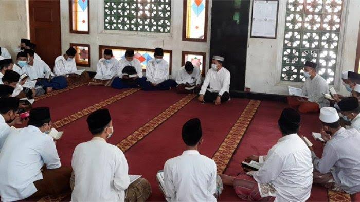

Nazmi Quran center didirikan darmawan yang bernama Nouval Nazmi Pada usia mudanya, yang didirikan pada tahun 2023 adalah sebuah
yayasan Al-Quran bersistem asrama yang fokus menyediakan tempat tinggal dan pendidikan kepada muslim dan muslimah tanpa batasan
umur se-Indonesia selama 4 tahun untuk menghafalkan, menafsirkan dan mengamalkan Al-Quran serta kembali mendakwahkannya kemasyarakat indonesia.
Pendidikan

Program harian
Kegiatan menghafal Al-quran yang dimulai sebelum shalat shubuh dan dilanjut dengan shalat shubuh berjamaah dimasjid, lalu lanjut menghafal al-quran kembali
sampai waktu dhuha dan dilanjutkan dengan shalat dhuha. setelah itu sarapan pagi bersama di dapur & dilanjutkan dengan kegiatan belajar mengajar dikelas sampai waktu dzuhur.
setelah dzuhur Para santri makan siang dan dilanjutkan dengan tidur siang sampai ashar, dan dilanjutkan dengan aktivitas olahraga sampai 1 jam sebelum shalat magrib dimulai, dan kembali menghafal al-quran
sampai waktu magrib, dan dilanjutkan makan malam, setelah itu shalat isya berjamaah dimasjid, setelah itu melanjutkan menghafal quran sampai waktu tidur pada pukul 21:00.
Program bulanan
program bulanan di yayasan kami adalah kegiatan Simaan, yaitu mendengarkan hasil keseluruhan hafalan yang sudah dihafal santri setiap bulannya.
dengan harapan semua santri mencapai target yang sudah ditetapkan agar bisa lulus tepat waktu.
Program tahunan
Kegiatan-kegiatan pada program tahunan yang sudah berjalan dan teratur yaitu:
Pembukaan tahun ajaran baru dan rapat awal tahun serta pembagian jadwal mengajar dan pembuatan Rencana Program Semester (PROMES).
kegiatan Panggung gembira, yaitu kegiatan festival seni kreativitas santri yang selalu diadakan setiap satu tahun sekali.
haflatul wada. kegiatan akhirus sannah yaitu Haflatul Wada' (melepas santri) yang telah memenuhi target waktu kelulusan & sudah benar-benar menghafal 30 Juz Al-quran.